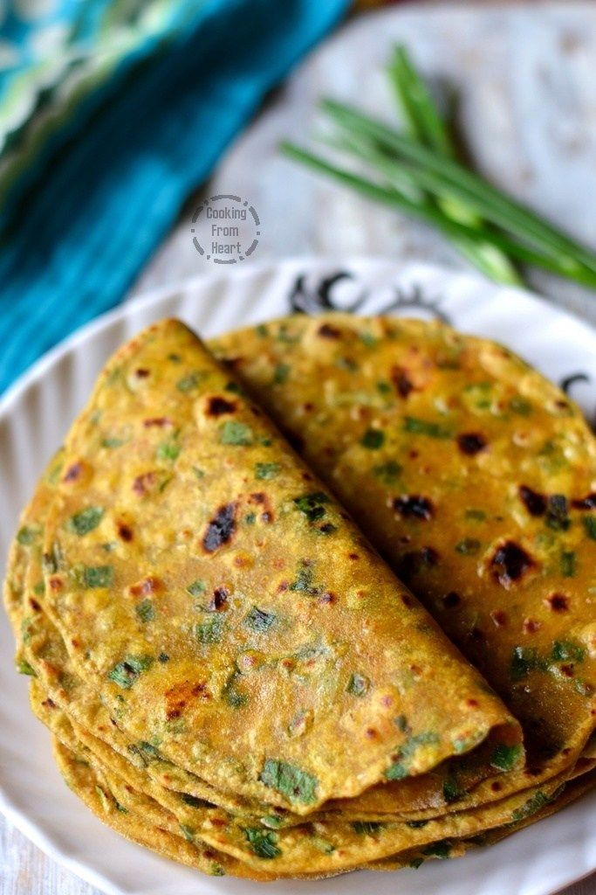

Spring Onion Paratha
Ingredients
1 heaped cup wheat flour
1/2 cup loosely packed chopped spring onion
1/8 tsp turmeric powder
1/4 tsp jeera powder
1/2 tsp garam masala powder
1 tsp oil
salt to taste
water as needed
ghee or oil to toast
Steps
1>To a mixing bowl - add wheat flour. Clean spring onion, rinse it well then fine chop it and add it.
2>Add jeera powder, garam masala powder, turmeric powder and required salt. Add oil.
3>First mix this well with your finger tip. Then add water little by little.
4>Knead to a smooth pliable dough. Close and set aside for 10mins.
5>Roll into big lemon sized balls. Dust flour on the rolling surface, and roll it thick or thin as per your preference. I made it just like chapathi.
6>Heat dosa tawa, add the paratha one by one, when it starts to bubble drizzle oil and cook on the other side.
7>Cook until both the sides are evenly cooked. Repeat to finish the dough. Make and stack the parathas in a hot pack or serve it immediately.
8>Serve Spring Onion Paratha hot with pickle and side dish of your choice.